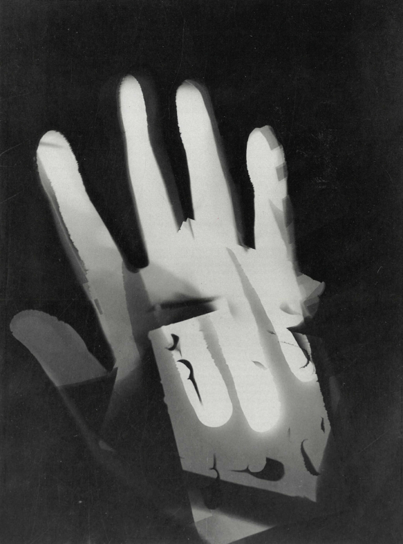

Laszlo - Mohily Nagy
László Moholy-Nagy (1895-1946) è stato un pittore, fotografo, designer e insegnante ungherese-americano, noto per il suo contributo all'arte moderna e per il suo ruolo nella scuola d'arte e design Bauhaus.
Nel 1920, Moholy-Nagy si trasferì alla Bauhaus, la scuola d'arte e design fondata da Walter Gropius. Inizialmente, insegnò la fotografia, ma con il tempo divenne responsabile del corso di metallo e, successivamente, del corso di progettazione preliminare. La sua visione integrata di arte e tecnologia ebbe un'influenza duratura sulla scuola.
Lavori
Moholy-Nagy ha utilizzato tecniche di collage e fotomontaggio, combinando elementi fotografici con materiali diversi per creare opere che fondono il reale e l'immaginario. Questa pratica è evidente nelle sue opere come "Photogram" (1926), dove oggetti sono posti direttamente sulla carta fotosensibile e poi esposti alla luce.
L'eredità di László Moholy-Nagy si estende dalla sua innovazione artistica all'influenza che ha avuto sull'educazione artistica e sul design moderno. La sua combinazione di sperimentazione tecnica e visione artistica ha contribuito a definire il paesaggio creativo del XX secolo.
